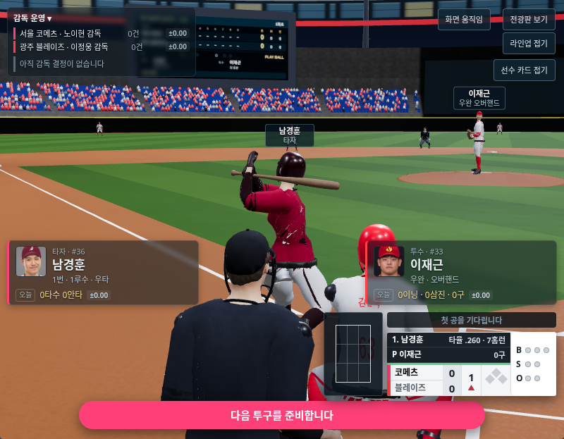
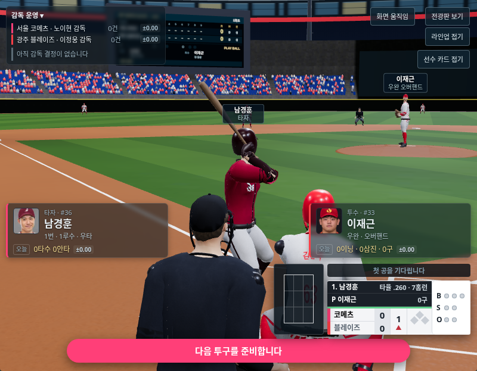

<!doctype html><html lang="ko"><meta charset="utf-8"><meta name="viewport" content="width=device-width,initial-scale=1"><title>동작·소리 비교</title><style>body{margin:0;padding:24px;background:#101820;color:#eaf0f4;font:16px system-ui,sans-serif}main{max-width:1500px;margin:auto}h1{font-size:24px}h2{font-size:18px;margin-top:30px}.pair{display:grid;grid-template-columns:1fr 1fr;gap:16px}figure{margin:0}img,video{width:100%;display:block;border-radius:6px}figcaption,p{color:#afc1cf}figcaption{padding:10px 0}audio{width:100%}button{background:#2676b1;color:white;border:0;border-radius:5px;padding:10px 16px;cursor:pointer}small{color:#afc1cf}@media(max-width:700px){body{padding:12px}.pair{grid-template-columns:1fr}}</style><main><h1>동작·소리 비교</h1><p>검토용 · 미배포</p><h2>스윙 후 복귀</h2><div class="pair"><figure><figcaption>기존 · 끝 자세에 멈춤</figcaption></figure><figure><figcaption>개선 · 준비 자세로 복귀</figcaption></figure></div><h2>소리 비교</h2><p>같은 효과음 구성 · 4초에 정지</p><div class="pair"><figure><figcaption>기존</figcaption><audio controls preload="metadata" src="previews/sound-before.mp3"></audio></figure><figure><figcaption>개선 · 함성 겹침과 정지 뒤 잔향 정리</figcaption><audio controls preload="metadata" src="previews/sound-after.mp3"></audio></figure></div></main>